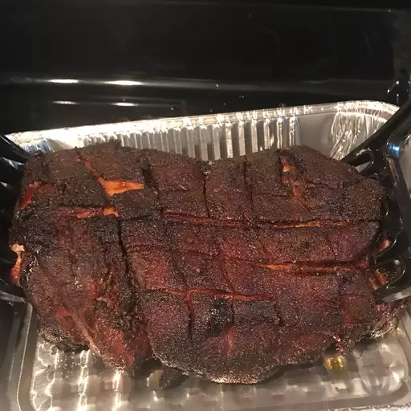

Pork on a Smoker

Description
This smoked pulled pork recipe is the correct way to smoke a pork shoulder with professional results — from the cider brine and sugar rub to the rave reviews you will receive. Smoke is the key to breaking down the fat, which adds flavor and moisture to the meat. Place in a bun with your favorite BBQ sauce.
Ingredients
- 1 (8 pound) pork shoulder roast
- 1 quart apple cider, or as needed
BBQ Rub
- 5 tablespoons white sugar
- 5 tablespoons light brown sugar
- 2 tablespoons kosher salt
- 2 tablespoons paprika
- 1 tablespoon onion powder
- 1 tablespoon freshly ground black pepper
- 1 tablespoon garlic powder
- 3 cups hickory chips, or more as needed, soaked in water
- 1 onion, chopped
Directions
- Place pork shoulder in a large pot and add enough apple cider to cover. Combine white sugar, brown sugar, salt, paprika, onion powder, black pepper, and garlic powder in a bowl. Mix ¼ cup of sugar rub into cider; reserve remaining rub. Cover the pot and refrigerate for 12 hours.
- Preheat the smoker to 210 °F (99 °C). Add enough wood chips to the smoker.
- Pour cider brine into the water pan of the smoker; add onion and ¼ cup more sugar rub.
- Spread remaining sugar rub over pork shoulder. Transfer pork to the center of the smoker.
- Smoke pork until very tender or until it reaches an internal temperature of 200 °F (95 °C), about 8 hours. Monitor hickory chips and liquid, adding more as needed.
- Transfer pork to a large platter and cool for 30 minutes before shredding with forks.
Original recipe